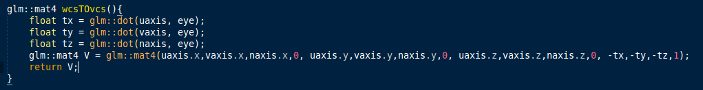
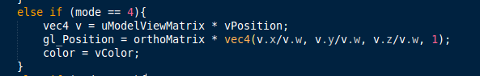

Computer Graphics cs475
Assignment 2 report
WCS
First we created the scene in world coordinate system (WCS) using four vaos, three for each object and one for frustum and eye. The scene looks as shown in the below figure
WCS to VCS
Next the scene is transformed from world coordinate system (WCS) to view coordinate system (VCS) on pressing key "1". In VCS the eye lies at the origin and lookat vector along negative z axis. First two image shows how the VCS coordinate axes are constructed and how the transformation is done from WCS to VCS. Last image shows the scene after transforming it into VCS

VCS to CCS
On pressing key "2" the scene is transformed from view coordinate system (VCS) to clipping coordinate system (CCS). The frustum is transformed into cube whose center lies at origin, farplane at +1 and nearplane at -1 along n axis. First image shows how the transformation is done from VCS to CCS. Last image shows the scene after transforming it into CCS

CCS to NDCS
On pressing key "3" the scene is transformed from clipping coordinate system (CCS) to normalized device coordinate system (NDCS). Here all the cordinates are divided by w,
4th cordinate in homogenous system. First image shows how the transformation is applied on each vertex to normalize them. Last image shows the scene after transforming it into NDCS

NDCS to DCS
On pressing key "4" the scene is transformed from normalized device coordinate system (NDCS) to device coordinate system (DCS). Here all the cordinates are scaled according to the screen width and height which in this case are 40 and 40. First image shows how the transformation is applied on each vertex to make them adjust according to device width and height. Last image shows the scene after transforming it into DCS
Controls
The following are the controls used
- 1 to transform from WCS to VCS
- 2 to transform from VCS to CCS
- 3 to transform from CCS to NDCS
- 4 to transform from NDCS to DCS
- S, D to translate along X axis
- W, A to translate along Y axis
- Z, X to translate along Z axis
- Up, Down to rotate about X axis
- Left, Right to rotate about Y axis
- PgUp, PgDown to roatate about Z axis